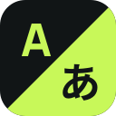
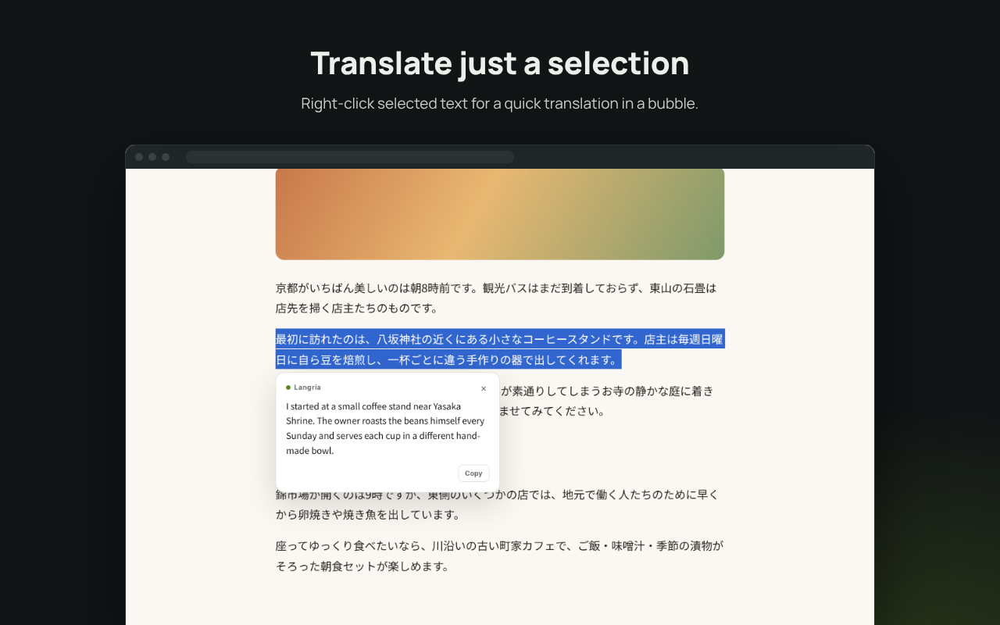
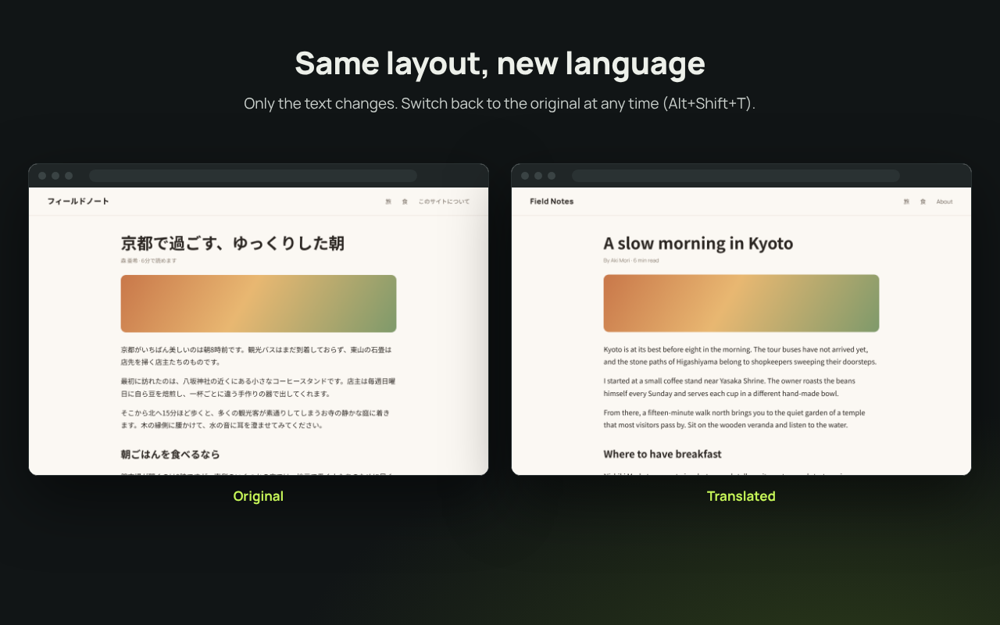
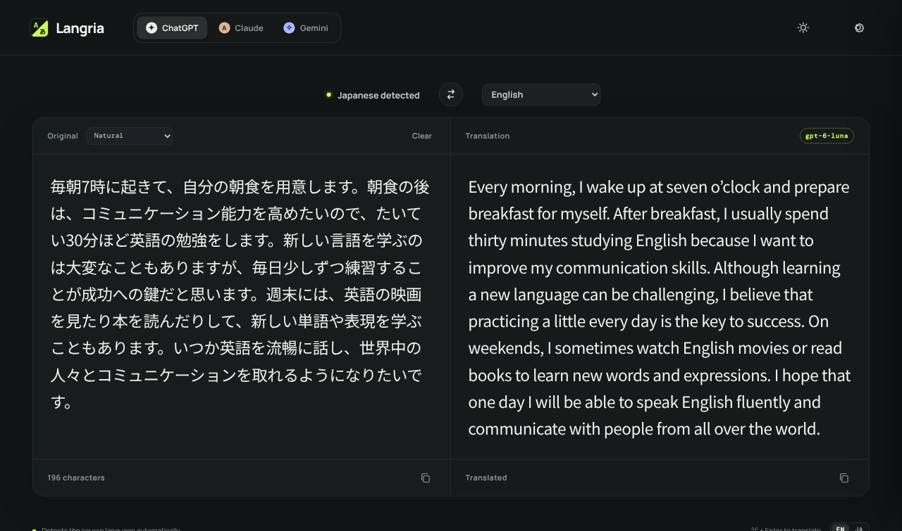

LangriaLangria – AI Web Page Translator
Translate with the AI service you choose: ChatGPT (OpenAI), Claude (Anthropic) or Gemini (Google). Langria comes in two forms:
Chrome extension
Translates the web page you are viewing, or just the text you select, in place.
How to installWeb app
Translates text you type or paste. Runs in any browser, nothing to install.
Try the web app- Uses your own API key. Your text goes straight from your browser to the service you choose.
- No Langria server, no analytics, no tracking, no ads.
- A free Gemini API key from Google AI Studio is enough to get started.
Features
- Switch between ChatGPT, Claude and Gemini, and set the model for each.
- Translate into English, Japanese, Chinese, Korean, Spanish, French, German and many more, or type any language.
- Five translation modes: Faithful, Natural, Business, Casual & social, Technical.
- API keys can be encrypted with a passkey (Touch ID, etc.) or a passphrase.
- The interface is available in English and Japanese.
Chrome extension
Translates the page you are viewing. Pages keep their layout, and you can switch back to the original in one click.
Installation
Choose one of the following.
- From the Chrome Web Store: open Langria on the Chrome Web Store and click “Add to Chrome”. Updates are installed automatically.
- From this repository, for your own use: download or clone the GitHub repository, open
chrome://extensions, turn on “Developer mode” at the top right, click “Load unpacked” and select the repository’sextensionfolder. It is not updated automatically: after pulling new code, press Langria’s reload button (↻) onchrome://extensions. See the README for details.
Usage
- Enter an API key for OpenAI, Anthropic or Google Gemini on the extension’s settings page.
- Click the toolbar icon and press “Translate this page”. What is on screen is translated first, and the rest as you scroll.
- Press “Show original” or Alt+Shift+T to switch back. To translate just a part, select text, right-click and choose “Translate … with Langria”.
Demo video


Web app
A translation tool for text you type or paste. The source language is detected automatically, and the text is translated shortly after you stop typing. Open the web app, enter your API key under Settings (the gear icon) and start typing.

- The same services, target languages and translation modes as the extension.
- A swap button exchanges the two panes and the target language, handy for writing replies.
- Light and dark mode.
- Your API key is stored only in your browser.
The web app on this site is a demo for trying Langria out. For regular use, we recommend hosting your own copy: it is a static site with no build step, so you can put the files from the GitHub repository on any web server or simply run it on localhost. See the README for how to set it up.
Links
Langria is an independent project and is not affiliated with or endorsed by OpenAI, Anthropic or Google.